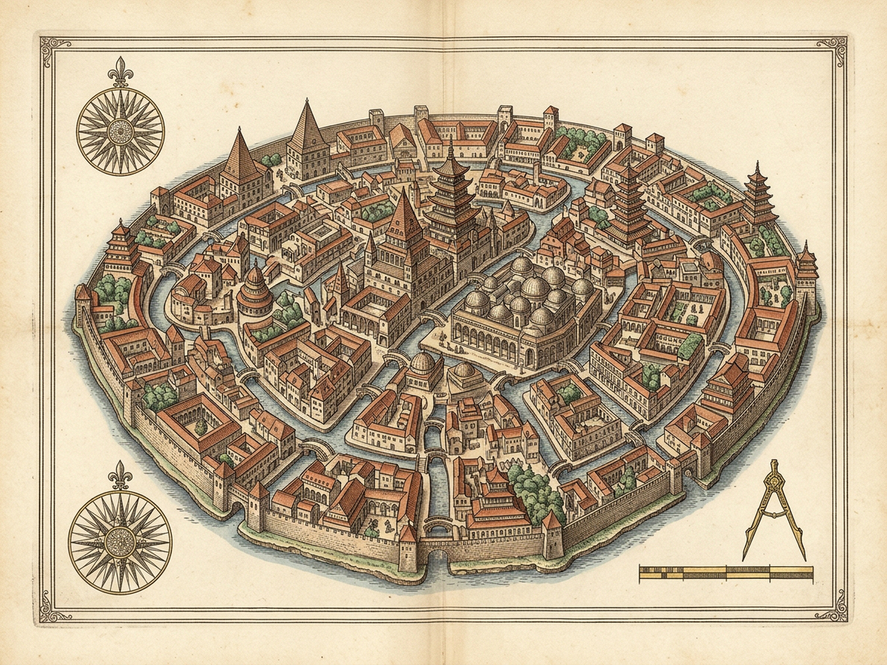
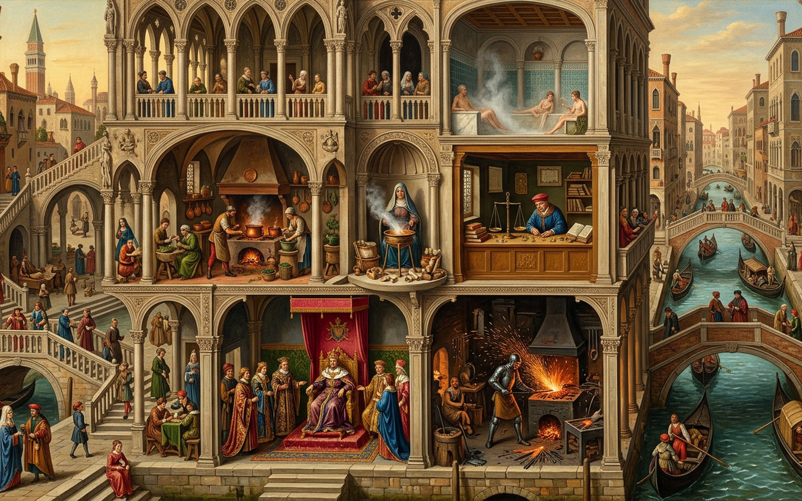

XIII
ZOE
Cities & Signs · 3 — Indivisible Existence
Every point of Zoe hosts every act: outward form never fixes inward life.
9/9 Acts Live
Incongruity 100%
Pyramid Roof
Expected: Royal Palace
Now: ✚ Leprosarium · ≈ Baths
Pine-Cone Pagoda
Expected: High Priests Temple
Now: ⚒ Forging · ♨ Cooking
Covered Market
Expected: Grand Bazaar
Now: ◈ Oracles · ☽ Sleeping
Scrawl of Canals
Expected: Embassy Quays
Now: ⚖ Gold · ♛ Reigning
Rubbish Heap
Expected: Outcast Midden
Now: ⇄ Trading
Drag across Zoe to chalk a boundary · Tap a shell to focus · Tap any act below to route inside
☽Sleeping→ Market
⚒Forging→ Pagoda
♨Cooking→ Pagoda
⚖Gold-Count→ Canals
♛Reigning→ Canals
⇄Trading→ Midden
◈Oracles→ Market
✚Leprosarium→ Pyramid
≈Bathing→ Pyramid
Chalk: Ready (Drag on city)
Dissolved: 0
Doubt: 18%
Folds: 0 · Wheels≡Wolves
[1] Sacred/Profane
[2] Royal/Artisan
[3] Pure/Leprous
[4] Wheels/Wolves
[X] Permute 9
[W] Tumble Edge
[M] Sound: On
[R] Reset
[P] Plates
ZOE · XIII — Royal Plate Guild Archival Folio
Diptych
Cartographic Map
City Vista
[Z] Loupe 1.75x
[Esc] Close

Plate I · Cartographic Plan of Zoe (map.png · 1600×1200) — Indivisible continuum without boundary walls

Plate II · Architectural Cutaway Vista of Zoe (image.png · 1600×1000) — Deceptive roofs, canals & simultaneous acts